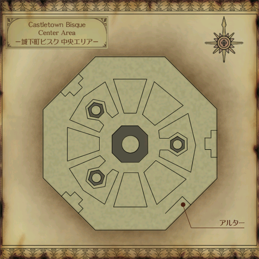

一覧採掘ガイド：城下町ビスク 中央エリア（10251）
城下町ビスク 中央エリア の掘り場 3 か所（岩 91 個）。
掘り場の地図

#1#2#3緑の点が岩、#番号が掘り場（岩 3 個以上）。点にマウスを合わせると岩の名前。
掘り場
地図の緑の点が岩、赤がプレイヤーを襲うモンスター、灰色が襲わないモンスターの出る位置。
#1（岩 78 個）
- 岩の数
- 78 個（58 か所）
- 広さ
- 145 m
- 間隔
- 8 m
- 再出現
- 60 秒
- 岩の Lv
- 26〜31
- 出かた
- 時間帯や条件で出る岩をふくむ
出るもの
| アイテム | 1 周 | 1 時間に湧く量 |
|---|---|---|
| カリッザ鉱石 | 390 | 23400 |
| 悟りの石 | 0.78 | 46.8 |
岩
| 出る岩（出るたびに抽選） | 数 |
|---|---|
| カリッザの岩石 Lv 26〜31 | 78 |
近くのモンスター
届くモンスターはいない。
#2（岩 9 個）
- 岩の数
- 9 個（7 か所）
- 広さ
- 33 m
- 間隔
- 12 m
- 再出現
- 60 秒
- 岩の Lv
- 26〜31
- 出かた
- 時間帯や条件で出る岩をふくむ
出るもの
| アイテム | 1 周 | 1 時間に湧く量 |
|---|---|---|
| カリッザ鉱石 | 45 | 2700 |
| 悟りの石 | 0.09 | 5.4 |
岩
| 出る岩（出るたびに抽選） | 数 |
|---|---|
| カリッザの岩石 Lv 26〜31 | 9 |
近くのモンスター
届くモンスターはいない。
#3（岩 4 個）
- 岩の数
- 4 個（3 か所）
- 広さ
- 30 m
- 間隔
- 13 m
- 再出現
- 60 秒
- 岩の Lv
- 26〜31
- 出かた
- 時間帯や条件で出る岩をふくむ
出るもの
| アイテム | 1 周 | 1 時間に湧く量 |
|---|---|---|
| カリッザ鉱石 | 20 | 1200 |
| 悟りの石 | 0.04 | 2.4 |
岩
| 出る岩（出るたびに抽選） | 数 |
|---|---|
| カリッザの岩石 Lv 26〜31 | 4 |
近くのモンスター
届くモンスターはいない。